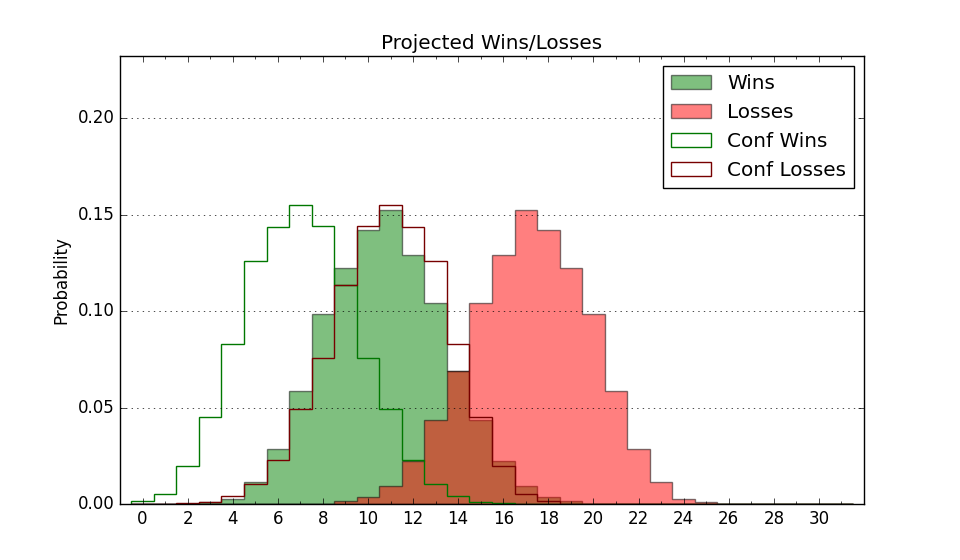

| Home | Game Probabilities | Conferences | Preseason Predictions | Odds Charts | NCAA Tournament |
| City: | Las Cruces, New Mexico | |
| Conference: | Conference USA (1st)
| |
| Record: | 0-0 (Conf) 3-5 (Overall) | |
| Ratings: | Comp.: -4.2 (205th) Net: -4.5 (207th) Off: 100.8 (236th) Def: 105.4 (184th) SoR: 0.1 (187th) |
| Remaining | ||||||
|---|---|---|---|---|---|---|
| Date | Opponent | Win Prob | Pred. | |||
| 12/12 | @ Texas (32) | 4.7% | L 59-80 | |||
| 12/16 | Southern Utah (217) | 67.5% | W 75-70 | |||
| 1/2 | Sam Houston St. (143) | 52.8% | W 75-74 | |||
| 1/4 | Louisiana Tech (99) | 39.9% | L 67-69 | |||
| 1/11 | @ UTEP (156) | 27.5% | L 64-71 | |||
| 1/16 | @ FIU (238) | 42.6% | L 68-71 | |||
| 1/18 | @ Liberty (72) | 10.6% | L 58-72 | |||
| 1/23 | Kennesaw St. (181) | 60.8% | W 75-72 | |||
| 1/25 | Jacksonville St. (190) | 62.9% | W 71-67 | |||
| 1/30 | @ Middle Tennessee (138) | 24.2% | L 66-74 | |||
| 2/1 | @ Western Kentucky (107) | 16.9% | L 65-77 | |||
| 2/8 | UTEP (156) | 56.3% | W 69-67 | |||
| 2/13 | Liberty (72) | 28.7% | L 62-68 | |||
| 2/15 | FIU (238) | 71.6% | W 73-66 | |||
| 2/20 | @ Jacksonville St. (190) | 33.2% | L 67-72 | |||
| 2/22 | @ Kennesaw St. (181) | 31.3% | L 71-77 | |||
| 2/27 | Middle Tennessee (138) | 52.1% | W 71-70 | |||
| 3/1 | Western Kentucky (107) | 41.0% | L 70-72 | |||
| 3/6 | @ Louisiana Tech (99) | 16.3% | L 62-73 | |||
| 3/8 | @ Sam Houston St. (143) | 24.7% | L 71-78 | |||
| Previous | Game Score | |||||
| Date | Opponent | Win Prob | Result | Off | Def | Net |
| 11/9 | @Dixie St. (243) | 43.2% | W 75-63 | 8.4 | 13.2 | 21.6 |
| 11/14 | Tex A&M Corpus Chris (157) | 56.4% | W 83-82 | 7.1 | -5.8 | 1.3 |
| 11/20 | @Dayton (33) | 4.7% | L 53-74 | -5.3 | 3.8 | -1.5 |
| 11/23 | @UNLV (106) | 16.8% | L 65-72 | -1.4 | 1.4 | -0.0 |
| 11/29 | (N) Pepperdine (211) | 51.9% | L 70-82 | -13.3 | -9.5 | -22.8 |
| 11/30 | (N) Bowling Green (265) | 63.2% | L 60-61 | -19.9 | 6.1 | -13.8 |
| 12/4 | Abilene Christian (198) | 64.0% | L 70-78 | -2.4 | -21.6 | -24.0 |
| 12/7 | @New Mexico (76) | 10.9% | W 89-83 | 19.5 | 6.9 | 26.4 |
| Stats & Trends | |||||
|---|---|---|---|---|---|
| Current | Day | Week | Month | Season | |
| Composite | -4.2 | -0.2 | +0.5 | -1.1 | -0.7 |
| Comp Rank | 205 | -3 | +3 | -21 | -22 |
| Net Efficiency | -4.5 | -0.3 | +1.2 | -17.8 | -- |
| Net Rank | 207 | -2 | +16 | -119 | -- |
| Off Efficiency | 100.8 | -0.1 | +4.1 | -10.4 | -- |
| Off Rank | 236 | -4 | +55 | -118 | -- |
| Def Efficiency | 105.4 | -0.2 | -2.8 | -7.4 | -- |
| Def Rank | 184 | -4 | -31 | -94 | -- |
| SoS Rank | 106 | -5 | +31 | +77 | -- |
| Exp. Wins | 10.8 | -0.1 | +0.2 | -2.0 | -1.4 |
| Exp. Conf Wins | 7.1 | -0.1 | -0.1 | -1.8 | -1.7 |
| Conf Champ Prob | 1.4 | -0.3 | -0.5 | -5.7 | -6.6 |

| Advanced Stats | ||
|---|---|---|
| Stat | Value | Rank |
| Off Eff FG % | 0.451 | 317 |
| Off Ast Ratio | 0.116 | 329 |
| Off ORB% | 0.337 | 60 |
| Off TO Rate | 0.131 | 70 |
| Off FT Ratio | 0.348 | 149 |
| Def Eff FG % | 0.443 | 31 |
| Def Ast Ratio | 0.141 | 147 |
| Def ORB% | 0.327 | 312 |
| Def TO Rate | 0.106 | 352 |
| Def FT Ratio | 0.478 | 348 |